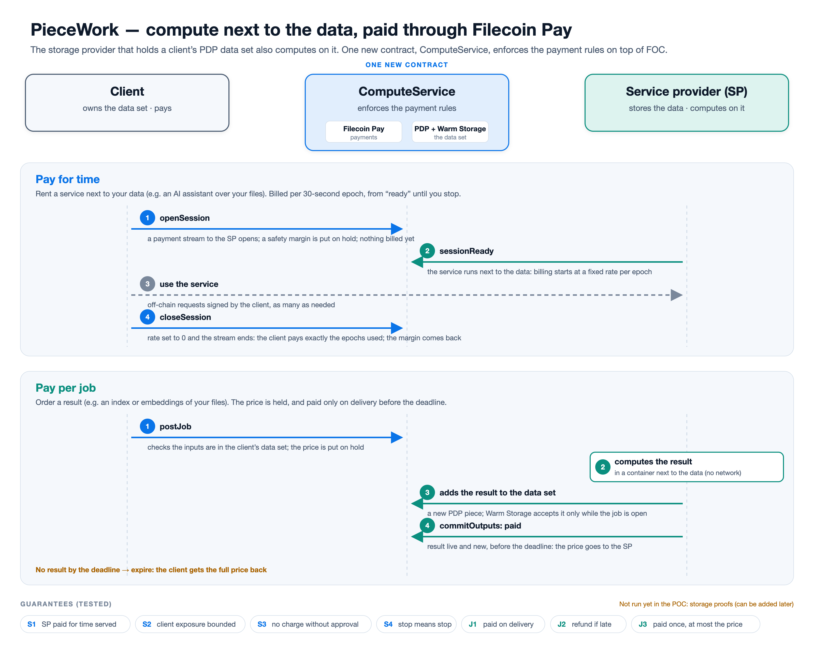

Checking whether the live demo is running…
What the demo shows. The storage provider that holds a client's data on Filecoin also computes on it, paid through Filecoin Pay: pay for time (rent a service next to your data) or pay per job (order a result). Every step is a real transaction on the Filecoin Calibration network.

If you believe the demo should be up, try opening it directly.